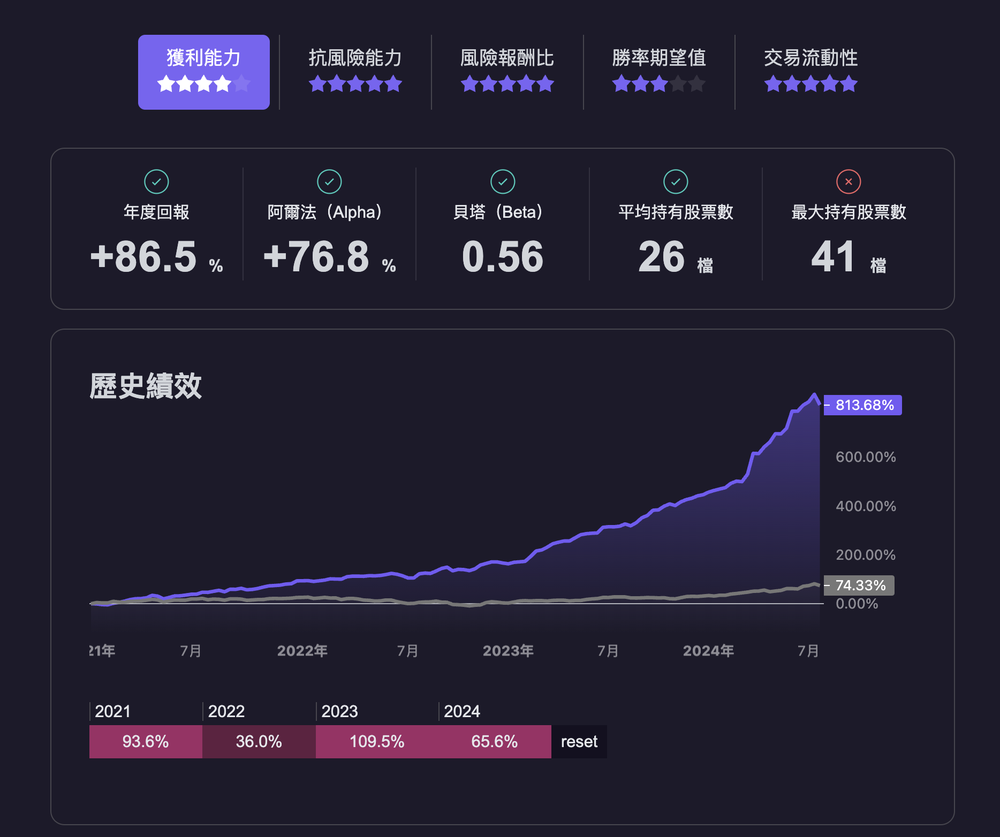

下單(多策略)
本指南適用於有明確交易策略的用戶，包括以下步驟：
- 執行交易策略
- 組合交易部位
- 計算股票張數
- 實際下單
下面將會一一介紹如何進行下單。
此功能為BETA版
本功能目前已有上千萬的資金正在使用，但第一次使用時，請於盤後或盤前進行，避免在交易時段操作，以免發生非預期的錯誤。
1. 執行交易策略
在下一個交易日開盤前，首先需要執行策略並取得交易報告。以下介紹三種方式：
A. 使用 backtest.sim 進行回測，
用戶可以根據 回測教學 撰寫自己的策略，並通過回測獲取報告：
說明：這種方式需要完整執行程式碼，可能會花費一些時間。B. 下載平台上使用者的策略來獲得回測報告
用戶可以在平台上的 我的策略 中選擇想要下單的策略，記錄名稱後下載報告並下單：
from finlab.portfolio import create_report_from_cloud
report1 = create_report_from_cloud('NAME_OF_STRATEGY1')
report2 = create_report_from_cloud('NAME_OF_STRATEGY2')
C. 直接設定部位
適合已有持股並希望定期進行重新平衡的用戶：
from finlab.portfolio import create_multi_asset_report
report1 = create_multi_asset_report({'2330': 0.5, '1101': 0.5}, resample='Q')
report2 = create_multi_asset_report({'2330': 0.7, '1101': 0.3}, resample='M')
resample 參數表示重新平衡的頻率，例如 Q 表示按季度重新平衡。
2. 組合交易部位
取得多個策略報告後，可以組合這些部位並評估績效：
from finlab.portfolio import Portfolio
port = Portfolio({
'strategy1': (report1, 0.5),
'strategy2': (report2, 0.5)
})
port.display()
此時程式會模擬這兩個部位的組合並計算出績效。如下圖所示： 
3. 計算股票張數
接下來，我們需要計算每檔股票投資的張數。使用 PortfolioSyncManager 可以達成以下目標：
- 判斷是否需要更新部位
- 在策略換股日，重新計算每檔股票的張數
- 在每個交易日後，檢查是否需要停損或停利
- 在換股時，確保在指定的金額 (
total_balance) 內進行換股
創建 PortfolioSyncManager
用戶可以選擇以下方式之一來創建 PortfolioSyncManager：
更新持股：
可以根據需求選擇不同的更新方式：
Estimate value 9633950
quantity price weight close_price volume strategy type
stock_id
1213 19.0 10.15 0.019055 10.15 69.948 r2,r3 MARGIN_TRADING
1336 8.0 22.05 0.017430 22.05 270.865 r5,r6,r7 MARGIN_TRADING
1441 12.0 14.70 0.017430 14.70 76.901 r0,r8 MARGIN_TRADING
1468 8.0 14.60 0.011541 14.60 33.000 r9 MARGIN_TRADING
1474 8.0 13.90 0.010987 13.90 113.962 r1 MARGIN_TRADING
2496 15.0 73.50 0.108936 73.50 11.613 r0,r1,r2,r3,r4,r5,r8,r9 MARGIN_TRADING
3019 3.0 85.90 0.025463 85.90 5376.965 r3,r4,r5 MARGIN_TRADING
3430 6.0 60.30 0.035749 60.30 300.173 r4,r5,r6,r7 MARGIN_TRADING
3632 42.0 15.30 0.063494 15.30 15.637 r0,r1,r3,r4,r5,r6,r7 MARGIN_TRADING
4154 20.0 15.75 0.031125 15.75 57.116 r4,r5,r6,r7 MARGIN_TRADING
4554 3.0 29.50 0.008745 29.50 43.018 r8 MARGIN_TRADING
PortfolioSyncManager.update，以確保部位的正確性。
PortfolioSyncManager.update 控制參數
PortfolioSyncManager.update 有以下參數，請詳細閱讀確保您的部位更新正確：
portfolio (Portfolio or Report)
這是一個包含投資組合，這個計算股票同步帳戶的核心數據結構，所有股票張數運算都會參考 portfolio 進行。
total_balance (float)
總資產的浮點數值，表示投資者的整體資金狀況。這個數值包括所有現金和資產與股票的總和。
rebalance_safety_weight (float)
現金的權重，確保在以市價買賣資產時，新的策略組合的總價值不會超過原有的組合價值。這個參數是再平衡策略的一部分，用於計算賣出股票後，有多少比例需要轉換成現金。舉例來說，如果設定為20％，則賣出資產後，20％的資金將保留為現金，其餘部分將用於購買新的資產。這有助於管理投資風險和確保流動性。假如使用者使用限價交易，可以將此參數設定為 5％。
smooth_transition (bool)
此參數決定是否採用平滑過渡的方式進行投資組合更新。當新增或減少策略、以及更新權重時，如果設定為 True，投資組合不會立即變更，而是在每個策略的到期日進行更新。這樣可以避免頻繁的交易，減少交易成本，並有助於投資組合的穩定性。預設值為 True。
force_override_difference (bool)
此參數決定是否強制覆蓋現有的不同部位，假如當天不是換股日，而且沒有停損停利，程式還是會驗證當前部位，以及跟模擬部位是否一致（理論上應該一致，但現實上有可能因為資料延遲登載、使用者忘記執行策略、使用者在資料登載前執行策略，而導致稍有不同）。若此參數設定為 True，發現有差異時，則會強制按照新的策略進行調整，預設值為 False，以避免不必要的交易和潛在風險。
這些參數在進行投資組合同步和再平衡時非常重要，正確設定和理解這些參數可以幫助投資者實現更有效的資產管理和風險控制。
PortfolioSyncManager.update 實際案例分析
update 函數介紹update 函數是管理投資組合的重要工具。它確保投資組合保持平衡，並在必要時重新調整投資，以遵循策略分配。以下是該函數的詳細工作原理。
步驟說明
-
識別需要更新的策略
-
函數首先檢查哪些策略需要更新。這基於策略中設定的下一個交易日期。如果下一個交易日期已到或已過，或策略權重發生變化，就需要更新。
-
它還會考慮是否啟用平滑過渡，這意味著更新將僅在下一個預定交易日期進行，以避免立即變更。
-
-
檢查當前持倉
- 函數會檢查投資組合中當前持有的股票列表，確認它們是否與策略報告中的股票匹配。如果有差異，函數會記錄警告，並在必要時強制更新。
-
計算資產價值和流動資金
-
總資產價值 ：函數會將投資組合中所有當前持倉的價值相加，這是目前持有的資產總價值。
-
流動資金 ：這代表通過出售當前持倉可以獲得的資金。對於需要重新調整的策略（那些下一個交易日期已到的策略），其持倉價值將計入流動資金中。還會考慮剩餘餘額（總餘額減去當前資產價值）。
-
限制流動資金 ：流動資金會被限制，以確保不超過根據策略權重總和計算出的總餘額。例如，如果總餘額為 $1,000,000，而兩個策略各自的權重為 50%，則最大流動資金為 $500,000。
-
安全資金 ：流動資金的一部分將被保留為安全資金，以確保重新調整期間投資組合的穩定性。這通常是流動資金的一個百分比（例如 20%）。
-
可投資資金 ：保留安全資金後的剩餘流動資金即為可投資資金。這些資金可用於根據更新的策略分配進行新投資。
-
-
更新各策略的持倉
-
對於每個需要更新的策略，函數會根據策略權重和可投資資金計算資金分配。
-
將該策略的舊持倉清算，並根據更新的策略分配創建新持倉。如果某支股票同時出現在舊持倉和新持倉中，則在重新平衡過程中將保留該股票。
-
如果任何股票觸發停損或停利訂單，其持倉將被設置為零，而不會重新平衡整個策略。
-
-
保存更新後的投資組合
- 最後，根據初始設置，將更新後的投資組合信息保存到本地或雲端，確保變更是持久的，未來可以訪問。
示例情境
為了更具體，我們來考慮一個例子：
-
初始設置 ：您的投資組合有兩個策略，A 和 B，各自的權重為 50%。
-
當前價值 ：總淨值為 $1,000,000。其中策略 A 的當前價值為 $300,000，策略 B 的價值也是 $600,000。之所以策略 A 的價值較低，是因為停損訂單導致部分股票持倉被清算；而策略 B 的價值較高，是因為其股票表現良好，上漲了。
-
重新調整條件 ：策略 B 計劃在明天是換股日，但 A 並不是。
更新過程 ：
-
識別需要更新的策略 ：
- 函數識別到策略 B 需要更新。
-
計算資產價值和流動資金 ：
-
總資產價值 ：$1,000,000。
-
流動資金計算 ：
-
策略 B 的持倉潛在流動資金：$600,000。
-
剩餘餘額：$100,000。
-
明日總流動資金為 \(700,000（\)100,000 + $600,000）。
-
提供給 B 的流動資金限制為 $500,000（由於策略 B 的權重為 50%）。
-
-
安全資金計算 ：
- 安全資金：$500,000 的 20% = $100,000。
-
可投資資金計算 ：
- 可投資資金：$500,000（流動資金）- $100,000（安全資金）= $400,000。
-
閒置資金計算 ：
- 閒置資金：策略 A (\(300,000)與新的策略 B (\)500,000) 的總持倉價值為 $800,000，因此剩餘餘額為 $200,000。
-
以閒置資金取代安全資金 ：
- 由於閒置資金（\(200,000）大於安全資金（\)100,000），因此不需要安全資金來換股，而是使用閒置資金即可。
- 重新計算可投資資金：$500,000（原始可投資資金）- $0（安全資金）= $500,000。
-
-
更新策略 B 的持倉 ：
-
在交易日期，策略 B 的舊持倉 $600,000 將被清算。
-
之後將用 $500,000 根據策略 B 買進股票。
-
任何 A 觸發停損或停利訂單的股票，其持倉將被設置為零，而不會重新平衡 B 策略持股。
-
-
保存更新後的投資組合 ：
- 保存更新後的資訊，以確保未來可以訪問。
總結
update 函數確保您的投資組合保持平衡並遵循策略分配。它仔細計算當前持倉的價值，確定可用資金，並根據最新策略更新投資組合，同時確保過程中的穩定性。觸發停損或停利訂單的股票將被設置為零，而不會重新平衡整個策略。這有助於管理風險並隨時間保持期望的投資策略。
新增移除策略
當您每天使用 pm.update 時，可以丟入不同的策略，不同的參數，來進行不同的操作，不論如何，它就是會用最合理的方式，完成您的部位更新。
當你想要馬上切換策略，不想要等待換股日才切換，可以設定 pm.update(..., smooth_transition=False)
儲存部位：
可以用以下方式來儲存部位：
自動化設計腳本
第一次請先創建部位：
之後可以每天自動化執行：
# 初始化 PortfolioSyncManager
pm = PortfolioSyncManager.from_local()
# 相關操作
# pm.update(...)
# 保存最後的操作結果
pm.to_local()
4. 實際下單
目前支援 玉山證券、永豐證券、元富證券 以及 富邦證券 的下單系統，可以先將帳號密碼設定成環境變數，只要針對您需要的券商來設定即可，不需要多個券商同時串接。
選擇您的券商
from finlab.online.esun_account import EsunAccount
import os
os.environ['ESUN_CONFIG_PATH'] = '玉山證券交易設定檔(config.ini.example)路徑'
os.environ['ESUN_MARKET_API_KEY'] = '玉山證券的行情API Token'
os.environ['ESUN_ACCOUNT_PASSWORD'] = '玉山證券的帳號密碼'
os.environ['ESUN_CERT_PASSWORD'] = '玉山證券的憑證密碼'
account = EsunAccount()
舊版 Fugle 環境變數（仍可使用）
from finlab.online.fugle_account import FugleAccount
import os
os.environ['FUGLE_CONFIG_PATH'] = '玉山證券交易設定檔(config.ini.example)路徑'
os.environ['FUGLE_MARKET_API_KEY'] = '玉山證券的行情API Token'
os.environ['FUGLE_ACCOUNT_PASSWORD'] = '玉山證券的帳號密碼'
os.environ['FUGLE_CERT_PASSWORD'] = '玉山證券的憑證密碼'
account = FugleAccount()
假如使用中下單出現錯誤代碼，可以到玉山證券文件 來查找原因。假如對於 Finlab Package 下單不熟習，建議也可以先按照券商的教學來練習，假如串接成功，則 FinLab Package 的串接也就是如法炮製的設定囉！
-
請先獲取憑證
- Windows 憑證下載方式
- MacOS 憑證下載：目前永豐雖支援 MacOS 下單，但並不支援用 MacOS 獲取憑證，可以先找一台 Windows 作業系統，並且使用上述方法獲取憑證後，再將憑證於 MacOS 來使用。
import os
from finlab.online.sinopac_account import SinopacAccount
os.environ['SHIOAJI_API_KEY'] = '永豐證券API_KEY'
os.environ['SHIOAJI_SECRET_KEY'] = '永豐證券SECRET_KEY'
os.environ['SHIOAJI_CERT_PERSON_ID']= '身份證字號'
os.environ['SHIOAJI_CERT_PATH']= '永豐證券憑證路徑'
os.environ['SHIOAJI_CERT_PASSWORD'] = '永豐證券憑證密碼' # 預設與身份證字號
account = SinopacAccount()
請參考元富證券的教學 來獲取憑證，並且將憑證放在相對應的路徑之中，並且安裝相對應的套件後，即可執行：
import os
from finlab.online.masterlink_account import MasterlinkAccount
os.environ['MASTERLINK_NATIONAL_ID'] = '身分證字號'
os.environ['MASTERLINK_ACCOUNT'] = '交易帳號'
os.environ['MASTERLINK_ACCOUNT_PASS'] = '密碼'
os.environ['MASTERLINK_CERT_PATH'] = '元富證券憑證路徑'
os.environ['MASTERLINK_CERT_PASS'] = '元富證券憑證密碼' # 預設與身分證字號
account = MasterlinkAccount()
即可完成設定！
請參考富邦證券的教學 來獲取憑證，並且將憑證放在相對應的路徑之中，並且安裝相對應的套件後，即可執行：
import os
from fubon_account import FubonAccount
# 設定環境變數
import os
os.environ['FUBON_NATIONAL_ID'] = "A123456789"
os.environ['FUBON_ACCOUNT_PASS'] = "your_password"
os.environ['FUBON_CERT_PATH'] = "/path/to/cert.pfx"
account = FubonAccount()
即可完成設定！